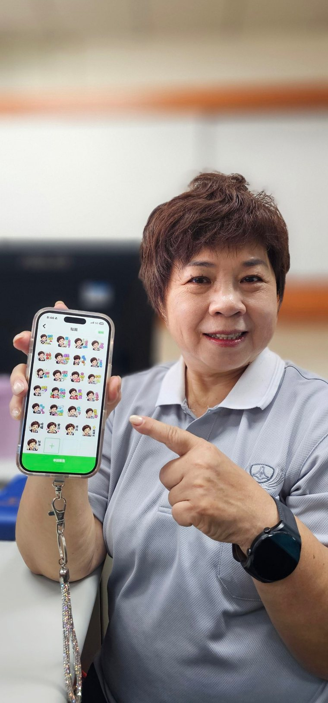
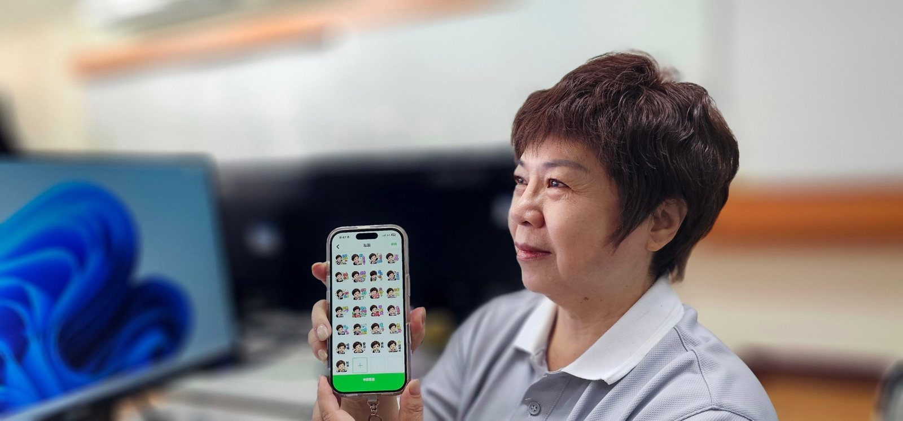

04｜STORY
分享與感動
小小貼圖，讓彼此的心更靠近
當我把貼圖分享給家人朋友時，大家看到可愛的卡通版自己，都覺得新奇又開心。平常聊天時，傳送「愛你」、「辛苦了」、「加油」等貼圖，不僅增添趣味，也讓關心與祝福更容易表達。

讓自己的笑容，傳遞幸福與祝福。林芳照用 AI 把自己的照片，變成活潑可愛的 LINE 貼圖。

找不到相符的作品。
讓自己的笑容，傳遞幸福與祝福
這次我想透過 AI，把自己的照片變成活潑可愛的 LINE 貼圖。特別選擇喜氣洋洋的造型，搭配「恭喜」、「愛你」、「謝謝」、「加油」等生活用語，希望讓每一張貼圖都充滿歡樂與溫暖，為親朋好友帶來好心情。
從照片到貼圖，體驗 AI 的神奇魅力
從靜態貼圖到動態貼圖，透過 AI 將自己變成可愛的卡通人物，還能加入愛心、彩帶與煙火等動畫效果。過程中不斷調整人物表情、動作與文字，讓作品更加生動。我最喜歡「恭喜」貼圖，繽紛的煙火與燦爛笑容，讓祝福變得更加熱鬧有趣。
在 LINE 中檢視動態貼圖（13 秒）
勇敢嘗試，發現自己的無限可能
原本以為製作貼圖需要專業設計能力，沒想到透過 AI，也能創作出屬於自己的作品。這次不僅學會與 AI 溝通、調整圖片及製作動畫，更讓我體會到「活到老、學到老」的樂趣。只要願意學習，科技也能成為生活中的好幫手。
小小貼圖，讓彼此的心更靠近
當我把貼圖分享給家人朋友時，大家看到可愛的卡通版自己，都覺得新奇又開心。平常聊天時，傳送「愛你」、「辛苦了」、「加油」等貼圖，不僅增添趣味，也讓關心與祝福更容易表達。

AI 讓我發現，創意不受年齡限制，學習可以帶來快樂，而一張小小的貼圖，也能傳遞滿滿的愛與幸福！
這次最大的收穫，不只是學會 AI 創作，更是找回勇於嘗試的熱情，讓自己的人生增添更多色彩與歡笑。